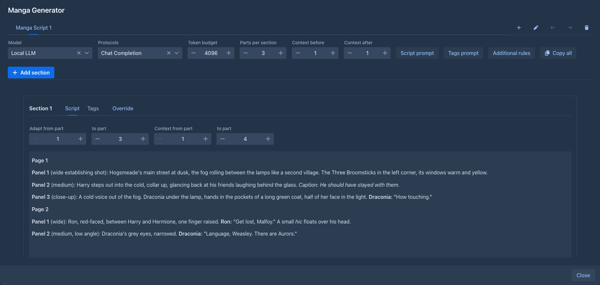
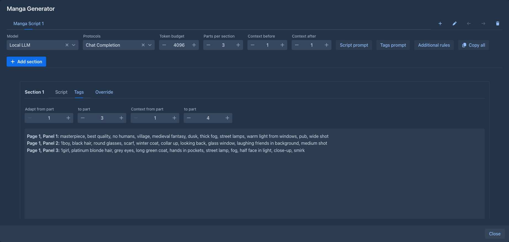

Manga Generator
Turn your story into a manga: the model adapts parts of the book into a script of pages and panels, and then writes image generation tags for every panel - ready for Stable Diffusion, Forge, Midjourney and the like. It is a port of the MangaGenerator extension of SillyTavern.
Opening it
Choose Manga Generator in the settings menu (⚙) of the story editor. One large window opens; nothing is added to the story screen itself. You can drag the window and resize it.
Mangas
A book can have several mangas, shown as tabs at the top of the window. The buttons next to the tabs add a manga (+), rename it, move it to the left or right and delete it. A manga is kept with the book, so it is in the book's backups and copies.
Below the tabs are the settings of the open manga:
Settings
Settings → Extension Settings → Manga Generator Settings holds what a new manga starts with: the token budget, parts per section, the context before and after, the script prompt, the tags prompt and the additional rules - and a text put before every request, for instructions that hold for all of your mangas. A prompt left empty, or unchanged, is the built-in one. A manga you made already keeps its own settings. The panel is saved with the Save button of the Settings page.
Sections
Add section adds a section for the parts of the story that follow the last section (the first one starts with part 1). Parts are numbered from 1 like in the outline. A section shows:
- Adapt from part / to part - the parts the model turns into panels,
- Context from part / to part - the parts the model reads; the ones outside the adapted range are only the background (earlier events, or what comes next), and the model is told not to adapt them. Change any of the four numbers whenever you want a different slice.
Each section has two views, Script and Tags:
-
Generate script streams the script into the section. A reasoning model's thinking is shown above it (Thought for 12.3 s). The script continues the page numbers of the section before it and does not repeat what that script already covers.
-
Switch to Tags and Generate tags: for each panel of the script, tags for the characters and the scene.

Either text can be edited by hand (the pen), copied, and a generation can be stopped with Abort - what the model wrote so far is kept. Sections generate independently, so you can start several; while any model is writing, sections cannot be deleted and mangas cannot be changed.

Override gives one section its own script prompt, tags prompt or additional rules, or a Rules addendum that is added to the rules of the manga instead of replacing them. The eye shows the exact request the model would get, with its size.
The lore and the size of the context
The model gets the text of the section's parts, and with it the lore the text calls for: entries of the book's lorebook (and its sub lorebooks) whose filters appear in that text, found like in a generation, including the scan depth. Entries that are always on come too. So the characters and places of those parts reach the model with their descriptions, which the image tags need.
All of it has to fit the context size of the model - the context of the AI and the protocol, minus the room for the reply. When the entries do not fit, the later ones are left out (a notice tells how many; the eye shows it too) - make the section smaller, or the lore shorter. A request that does not fit even without the lore is still sent, with a warning.
What is different from SillyTavern
-
A chat message is a part of the story; there are no names in front of messages, no persona and no character card - characters come from the lorebook.
-
The world info "trigger" of the extension is not needed: the lore is activated by the text itself.
-
The context size is taken from the AI and the protocol, there is no setting for it.
-
A new section takes 3 parts with 1 part of context on each side, as a part of a story is far longer than a chat message. Change this in the settings (below).
-
Tabs are moved with the arrow buttons, not by dragging.